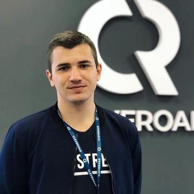

Контакты:
Skills:
- Проведение WEB и мобильного тестирования
- Тестирование API(Postman, swagger, JMeter), создание и поддердка коллекций, тестов
- Опыт работы с логами
- Опыт работы с микросервисной\монолитной архитектурами
- Анализ бизнес и функциональных требований
- Создание и ведение тестовой документации
Выпущенные проекты
- Fuzu(WEB)
- Обязанности
- Проведение веб тестирования и полная координация проекта
- Испытания
-
Построение QA процессов для аутстафф проекта
- CarU(web)
- Обязанности
- Тестирование и деплой новых задач
- Испытания
-
Обеспечение высокого качества легаси-проекта без документации
- Hakaya(iOS)
- Обязанности
- Поддержка основного QA. Работа над задачами, обсуждении и анализе требований.
- TalentQuest(mobile, flutter + web)
- Обязанности
- Принимал участие в полном цикле разработки проекта с нуля. Тестирование бекенд и мобильной частей приложения.